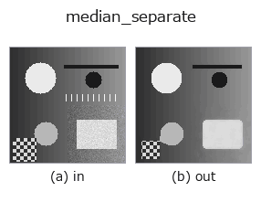

rank op• 数据种类:image → image
• 调用:fullseye.apply(img, "median_separate", a=0.5, b=0.5)(2-D 的模型是一张图 + 两个标量旋钮 a,b∈[0,1])
• HALCON 对应:median_separate(其含义与参数可参考 HALCON 手册)

*图为在 128×128 合成输入上实际运行的输出。左为输入，右为输出(非图像的返回值直接显示其值)。*
实现与 `median_image 相同(kind: "median",方形窗的二维中值)。HALCON 的 median_separate`(Separated median filtering with rectangle masks.)是一种快速近似算子,将行方向和列方向分离的一维中值分两个通道执行,但此替代实现不作区分,直接返回普通的二维中值(结果多数情况下相近,但严格来说是不同的算法 —— 此近似的局限)。
> 以下的详细说明为原文 —— 摘要与标题已翻译。
`a が窓の一辺を {3,5,7,9} で振る。b` は未使用。
• gallery2d_smoothing_rank 族使用指南
• 示例数据目录(下载 URL / 许可证) —— 2-D 用 skimage.data(BSD/公有领域)加合成图,3-D 给出真实数据源(Stanford/PDS 等)的下载 URL。
• 算子来历与参考文献 —— 该算子族所依据的研究/方法出处。
• 算法的正典(作者・年份)与用途见上面的族使用指南。
下面的程序已确认可以运行(与图相同的输入)。在 Studio 帮助中，此块会变成按钮，可当场加载并运行。
median_separate 0.50 0.50
▸ Load this pipeline · Load & run
• gallery2d_smoothing_rank — py -3.11 examples/gallery2d_smoothing_rank.py
image 作为输入)identity · gaussian · mean_box · bilateral · unsharp · median · min_filter · max_filter
rank)median · min_filter · max_filter · percentile · sk_median_disk · cv_median · median_image · median_rect
*Provenance: ops.py — 2D 算子登记表。本条目由 tools/opdocs.py md 自动生成(请勿手工编辑)。*
© 2026 Kazufumi Furuse — Fullseye operator documentation. Licensed under Apache-2.0.